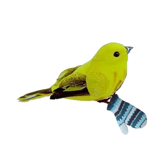

<!DOCTYPE html>
<html>
  <head>
    <script src="jspsych/jspsych.js"></script>
    <script src="jspsych/plugins/jspsych-html-keyboard-response.js"></script>
    <script src="jspsych/plugins/jspsych-image-keyboard-response.js"></script>
    <script src="jspsych/plugins/jspsych-image-button-response.js"></script>
    <link href="jspsych/css/jspsych.css" rel="stylesheet">
    <style>
    .fixation{position: relative; width: 200px; height: 100px; border: 2px solid black;}
    .fixation span {width: 200px; text-align: center; left: 0px;}
    .top{position: absolute; top: 0px;}
    .bottom{position: absolute; bottom: 0px;}
    .topleft{position: absolute; top: 10px; left: 10px; width: 48%; height: 47%; border: 2px solid black;outline-style: solid;
  outline-color: black;}
    .topright{position: absolute; top: 10px; right: 10px; width: 48%; height: 47%; border: 2px solid black;outline-style: solid;
  outline-color: black;}
    .bottomleft{position: absolute; bottom: 10px;left: 10px; width: 48%; height: 47%; border: 2px solid black;outline-style: solid;
  outline-color: black;}
    .bottomright{position: absolute; bottom: 10px; right: 10px; width: 48%; height: 47%; border: 2px solid black;outline-style: solid;
  outline-color: black;}
  .imgTL{position: absolute; top: 10px; left: 10px; }
  .imgTR{position: absolute; top: 10px; right: 10px; }
  .imgBL{position: absolute; bottom: 10px; left: 10px; }
  .imgBR{position: absolute; bottom: 10px; right: 10px; }

    </style>
  </head>

  <body>

  </body>
  <script>

    var hello = {
      type: 'html-keyboard-response',
      stimulus: 'Hello world.'
    }

    var timeline = [];

    timeline.push(hello);

    var lexical_decision_timeline =[];

    // fixation trial with a box response
    var fixation = {
      type: 'html-keyboard-response',
      stimulus: "<div class='fixation'></div>",
      choices: jsPsych.NO_KEYS,
      trial_duration: 1000
    }

    lexical_decision_timeline.push(fixation);

    var stimulus = {
      type: 'html-keyboard-response',
      stimulus: function(){
        return"<div class='fixation'> <span class='top'>"+
        jsPsych.timelineVariable('word_1', true)+
        "</span><span class='bottom'>"+
        jsPsych.timelineVariable('word_2', true)+
        "</span> </div>"
      },
      data: {
        related: jsPsych.timelineVariable('related'),
        phase: 'test-lexical'
      },
      choices: ["y","n"]
    }

    lexical_decision_timeline.push(stimulus);

    var trials = [
      {word_1: 'SOCKS', word_2: 'SHOE', both_wordds: true, related: true},
      {word_1: 'SLOW', word_2: 'FAST', both_wordds: true, related: true}
    ]

    var lexical_decision_proc = {
      timeline: lexical_decision_timeline,
      timeline_variables: trials,
      randomize_order: true,
      repetitions: 1 //other options = sample, with or without replacement, etc.
    }

    timeline.push(lexical_decision_proc);

    var vwp_timeline =[];

    var vwp_stimulus = {
      type: 'html-keyboard-response',
      stimulus: function(){
        return"<div> <span class='topleft'> </span><span class='topright'> </span><span class='bottomleft'> </span><span class='bottomright'> </span> </div>"
      },
      data: {
        related: jsPsych.timelineVariable('related'),
        phase: 'test-vwp'
      },
      choices: ["v","b","n","m"]
    }

    vwp_timeline.push(vwp_stimulus);

    var vwp_trials = [
      {picTL: 'pics/bird_mitten.png', picTR: 'pics/bunny_feather.png', picBL: 'pics/bear_candle.png', picBR: 'pics/fish.png', both_wordds: true, related: true},
      {picTL: 'pics/duckling.png', picTR: 'pics/cow.png', picBL: 'pics/fan.png', picBR: 'pics/dog.png', both_wordds: true, related: true}
    ]

    var vwp_proc = {
      timeline: vwp_timeline,
      timeline_variables: vwp_trials,
      randomize_order: true,
      repetitions: 1 //other options = sample, with or without replacement, etc.
    }

    timeline.push(vwp_proc);

   var test_pic = {
    type: 'image-keyboard-response',
    stimulus: 'pics/cow.png',
    choices: ['v', 'b']
    //prompt: "<p>Is this person happy or sad?</p>"
    };


//    var vwp_timeline2 =[];

  /*  var vwp_stimulus_pics = {
      type: 'image-keyboard-response',
      stimulus: function(){
        return "<div> <span class='imgTL'></span><span class='imgTR'></span><span class='imgBL'></span><span class='imgBR'></span> </div>"
      },
      data: {
        related: jsPsych.timelineVariable('related'),
        phase: 'test-vwp2'
      },
      choices: ["v","b","n","m"]
    }*/
/*    var vwp_stimulus_pics = {
      type: 'image-keyboard-response',
      stimulus: function(){
        return "<div> <span class='imgTL'></span> </div>"
      },
      data: {
        related: jsPsych.timelineVariable('related'),
        phase: 'test-vwp2'
      },
      choices: ["v","b","n","m"]
    }

    vwp_timeline2.push(vwp_stimulus_pics);

    var vwp_pics_trials = [
      {picTL: 'pics/bear_candle.png', picTR: 'pics/bird_mitten.png', picBL: 'pics/bunny_feather.png', picBR: 'pics/cow.png', both_wordds: true, related: true},
      {picTL: 'pics/dog.png', picTR: 'pics/duckling.png', picBL: 'pics/fish.png', picBR: 'pics/fan.png', both_wordds: true, related: true}
    ]

    var vwp_proc2 = {
      timeline: vwp_timeline2,
      timeline_variables: vwp_pics_trials,
      randomize_order: true,
      repetitions: 1 //other options = sample, with or without replacement, etc.
    }

    timeline.push(vwp_proc2);*/


    var gbye = {
      type: 'html-keyboard-response',
      stimulus: "You're done."
    }


    timeline.push(gbye);

    jsPsych.init({
      timeline: timeline
    })

  </script>
</html>
